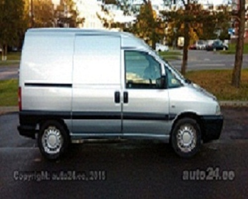
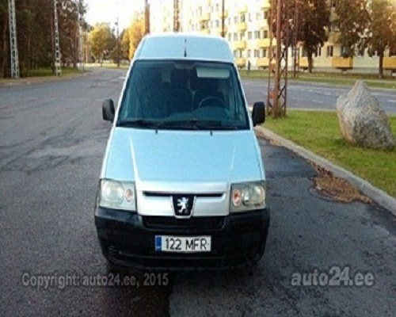
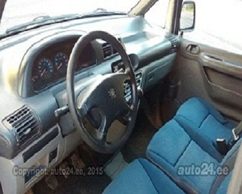
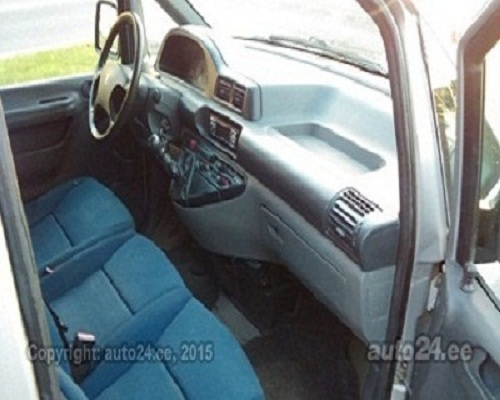

VitaLina+





Peugeot Expert 2.0 69kW
Цена 2300 Euro
Тип: грузовой микроавтобус Тип кузова: маленький грузовой микроавтобус Первичная рег: 2006 Двигатель: 2.0 (69 kW) Топливо: дизель Показ одометра: 218 000 km Ведущий мост: передний привод Коробка передач: механическая КП Цвет: серый
Оборудование
Оборудование безопасности
• усилитель руля • центральный замок (с пультом) • воздушная подушка • сигнализация • противобуксовочная система • натяжители ремней безопасности спередиОборудование комфорта
• электрические стеклоподъемникиАудио, видео, коммуникация
• стерео • звуковые колонкиШины и диски
• летняя резина • зимняя резина (шипованные шины)Другое оборудование
• перегородка (с окном) • Kerel esineb mõningaid iluvugu. Aga kõik mis on, töötab ilusti.Технические данные
Кузов
количество мест: 3 количество дверей: 5 Двигатель мощность: 69 кВтТопливо
топливо: дизель Другая информация На учете в Эстонии, техосмотр до 04.2016 Купленный в стране: Эстония